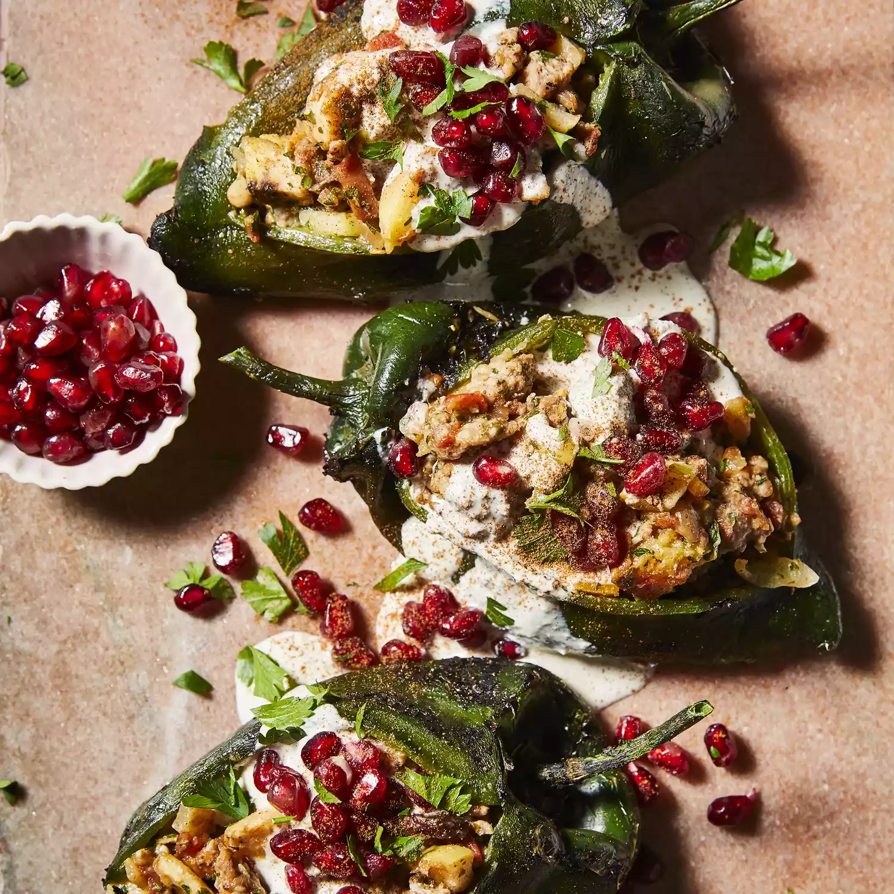

Nuestras recetas
Chile en nogada

Descripción
Moles come in various flavors and ingredients, with chili peppers as the common factor.
However, the classic mole version is the variety called mole poblano,
which is a dark red or brown sauce served over meat.
Ingredientes
- 3 large Roma tomatoes
- 1 dried morita chile
- 2 dried ancho chile peppers
- 2 dried guajillo chilies
- 1 dried cascabel chile
- 2 dried pasilla chiles
Pasos
- Heat about 3 cups water in a microwave-safe bowl for 3 minutes.
- Heat a griddle or comal over medium heat.
Toast pasilla chiles, guajillo chiles, ancho chiles, cascabel chile, and morita chile for about 1 minute. Turn chiles over and toast until fragrant, 1 to 2 minutes. Remove stems and seeds.
Place chiles in the bowl of water; cover and let soak, 10 to 15 minutes.
- Place tomatoes on the hot griddle.
Cook until blackened on all sides, 10 to 15 minutes.
Transfer to a blender.